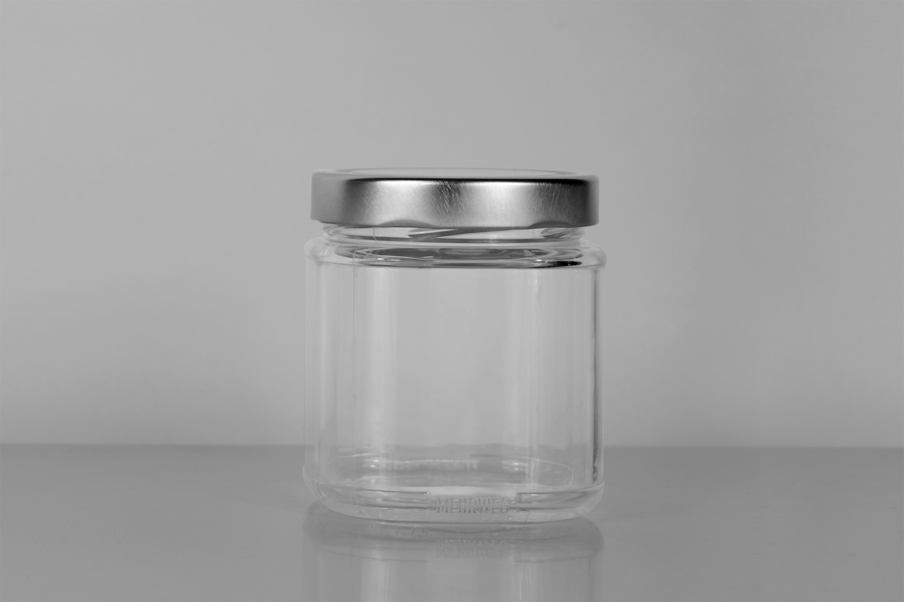
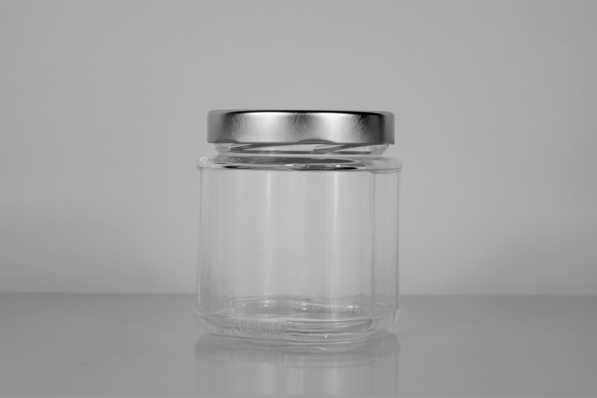

- In Kooperation mit dem Glashersteller Verallia AG haben wir ein Konzept für ein Mehrweg-Poolsystem für Glasbehälter sowie das Design des Glasbehälters erarbeitet.
- Herausforderungen
- Mehrweg-Verpackungssysteme sind nicht immer nachhaltiger als Einwegsysteme. Das Handling und die zu verpackenden Güter müssen genau untersucht werden.
- Lösungsansatz
- Das entwickelte Glas soll den Abfüllern in drei Größen zur Verfügung stehen, damit möglichst viele verschiedene Produkte darin verpackt werden können. Zudem ist das Glas durch die quadratische Grundfläche optimal für den Transport ausgelastet.
- Auftrag: Gestaltung eines Glasbehälters
- Kunde: Verallia Deutschland AG
- Entstehung: Studentische Gruppenarbeit
- Datum: Oktober 2021


